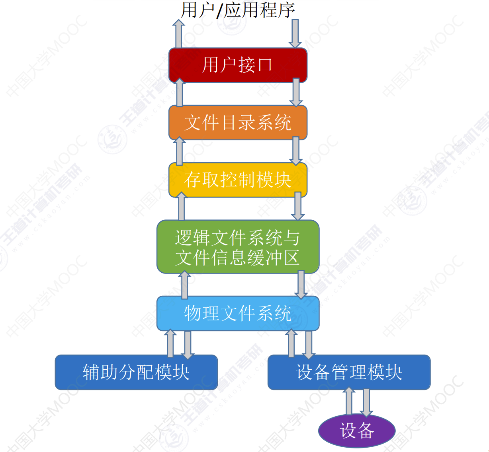
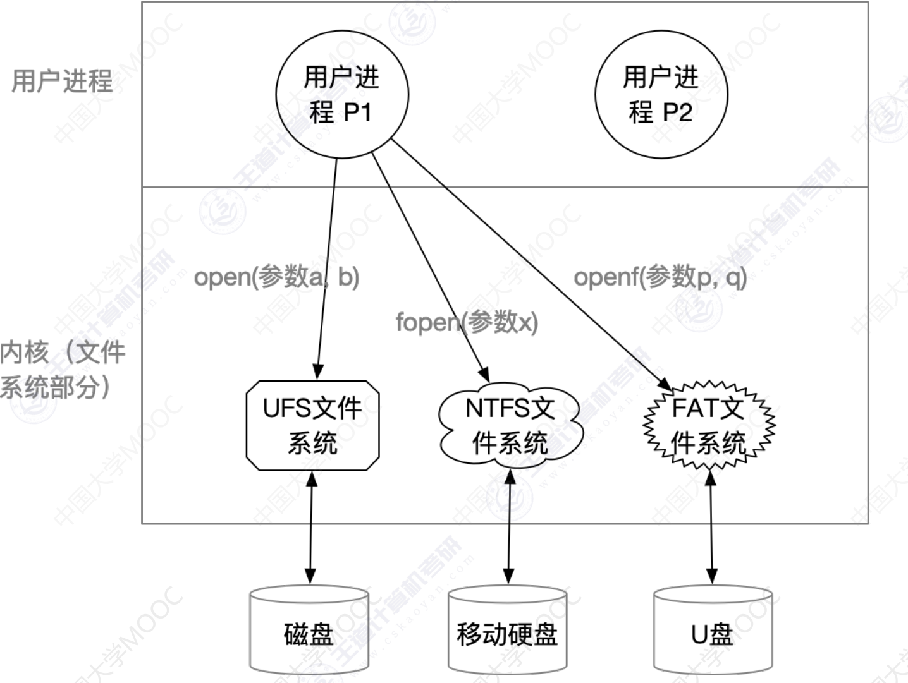
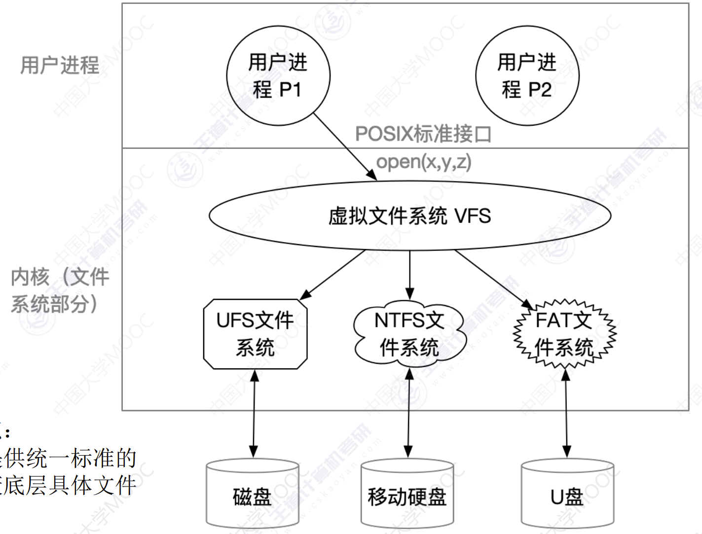

文件系统
文件系统
文件系统层次结构
- 用户接口：文件系统需要上层用户提供一些简单易用的功能接口。这层就是用于处理用户发出的系统调用请求。
- 文件目录系统：用户时通过文件路径来访问文件的，因此这一层需要根据用户给出的文件路径找到相应的FCB或索引节点。所有和目录、目录目录项相关的的管理工作都在本层完成。
- 存取控制块：为了保证文件数据安全，还需要验证用户是否有访问权限。这一层主要完成了文件保护的相关功能。
- 逻辑文件系统与文件信息缓冲区：用户想要指明文件的记录号，这一层需要将记录号转换为对应的逻辑地址。
- 物理文件系统：这一层需要把上一层提供的文件逻辑地址转换为实际的物理地址。
- 辅助分配模块：负责文件存储空间的管理，即负责分配和回收存储空间。
- 设备管理模块：直接与硬件交互，负责和硬件直接相关的一些管理工作。如：分配设备、分配设备缓冲区、磁盘调度、启动设备、释放设备等。
举例：假设某用户请求删除文件 “D:/工作目录/学生信息.xlsx” 的最后100条记录。
- 用户需要通过操作系统提供的接口发出上述请求。——用户接口。
- 用户提供的是文件存放路径，因此操作系统需要一层一层的查找目录，找到对应的目录项——目录文件系统。
- 不同的用户文件有不同的操作权限，因此，为了保证安全，需要检查用户是否有访问权限。——存取控制模块。
- 验证了用户的访问权限之后，需要把用户提供的记录号转变为相应的逻辑地址——逻辑文件系统与文件信息缓冲区。
- 知道了目标记录对应的逻辑地址后，还需要转换成实际的物理地址。——物理文件系统。
- 要删除这条记录后，必定要对磁盘设备发出请求。——设备管理程序模块。
- 删除这些记录后，会有一些盘块空闲，因此要将这些盘块回收。——辅助分配模块。
文件系统布局
- 物理格式化，即低级格式化——划分扇区，检测坏扇区，并用备用扇区替换坏扇区。

- 逻辑格式化，磁盘分区后，对各分区进行逻辑格式化，完成文件系统格式化。注：逻辑格式化后，灰色部分就有数据了，白色部分还没有数据。

文件系统在内存的结构

open系统调用过程：
- 用户调用open函数，根据路径一级一级将目录FCB读入内存，找到目标文件的FCB，复制到操作系统的文件打开表。
- 在进程的文件打开表中创建新建一个条目，并返回文件描述符，文件描述符就是进程文件打开表中的索引。
虚拟文件系统
普通文件系统
计算机系统可能挂载了多种类型的文件系统，用户进程调用时，需要根据不同的文件系统调用不同系统调用接口。这就到时用户编程不方便。所以，需要一个实现一个虚拟层来统一接口。
虚拟文件系统
特点：
- 向上层用户提供一个统一标准的系统调用接口，屏蔽底层文件具体文件系统的实现差异。
VFS要求下层的文件系统必须实现某些规定的函数功能，如：open/read/write。一个新的文件系统想要在某操作系统上被使用，就必须满足该操作系统VFS的要求- 每打开一个文件，VFS就在主存中新建一个
vnode，用统一的数据结构表示文件，无论该文件存储在哪个文件系统。

注意：vnode 只存在于主存中，而 inode 既会被调入主存，也会在外存中存储

文件系统挂载
文件系统挂载，即文件系统安装/卸载——如何将一个文件系统挂载到文件中。
文件系统要挂载要做的事情：
- 在VFS中注册新挂载的文件系统，内存中挂载表包含了每个文件系统方相关信息，包括文件系统的类型、容量大小等。
- 新挂载的文件系统，要VFS提供一个函数地址列表。
- 将新文件系统加到挂载点，也就是将新文件系统挂载在某个父目录下。
本博客所有文章除特别声明外，均采用 CC BY-NC-SA 4.0 许可协议。转载请注明来源 MyAKDreamのBlog！
相关推荐

2025-05-15
文件管理概述
文件管理概述文件属性文件名：由创建文件的用户决定文件名，主要是为了方便用户找到文件，同一目录下不允许有重名文件。标识符：一个系统内的各文件标识符唯一，对用户来说毫无可读性，因此标识符只是操作系统用于区分各个文件的一种内部名称。类型：指明文件的类型位置：文件存放的路径（让用户使用）、在外存中的地址（操作系统使用，对用户不可见）大小：指明文件大小创建时间、上次修改时间文件所有者信息保护信息：对文件进行保护的访问控制信息 文件数据组织 无结构文件（如文本文件）：由一些二进制或字符流组成，又称流式文件。 有结构文件（如数据库表）———由一组相似的记录组成，又称记录式文件 文件内部数据组织 操作系统应该提供哪些功能 可以创建文件，（点击新建后，图形化交互进程在背后调用了 create 系统调用） 可以读文件，将文件数据读入内存，才能让CPU处理（双击后，记事本应用程序通过操作系统提供的读文件功能，即 read...
2025-05-15
文件结构
文件结构文件逻辑结构按文件是否有结构分类，可以分为无结构文件、有结构文件两种。 无结构文件无结构文件：文件内部的数据就是一系列二进制流或字符流组成。又称“流式文件”。如：Windows 操作系统中的 .txt...
2025-05-15
文件功能
文件功能文件操作创建文件 进行Create系统调用时，主要做了两件事： 在外存中找到文件所需的空间 根据文件存放的路径信息找到该文件，在目录中创建该文件对应的目录项。目录项中包含了文件名。文件在外存中的存放位置信息。 删除文件 进行Delete系统调用时，需要提供的几个主要参数 文件存放路径 文件名 进行Delete系统调用时，主要做了两件事： 根据文件存放路径找到相应的目录文件，从目录中找到文件名对应的目录项。 根据该目录记录的文件在外存的存放位置、文件大小信息，回收文件占用的磁盘块。位图法等管理策略的不同，需要做不同的处理。 从目录表中删除文件对应的目录项。 打开文件 在很多操作系统中，在对文件进行操作之前，要求用户先使用 open 系统调用打开文件，需要提供的几个主要参数： 文件存放路径（“D:/Demo”） 文件名（“test.txt”） 要对文件的操作类型（如：r 只读；rw 读写等） 操作系统在处理 open...